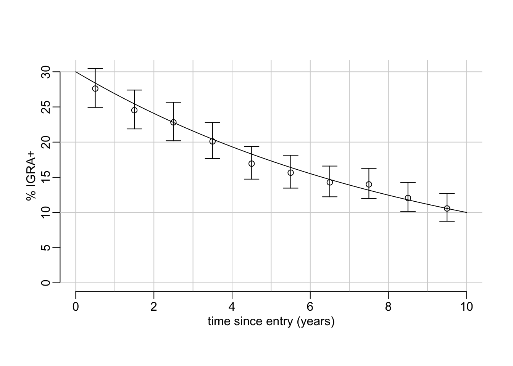
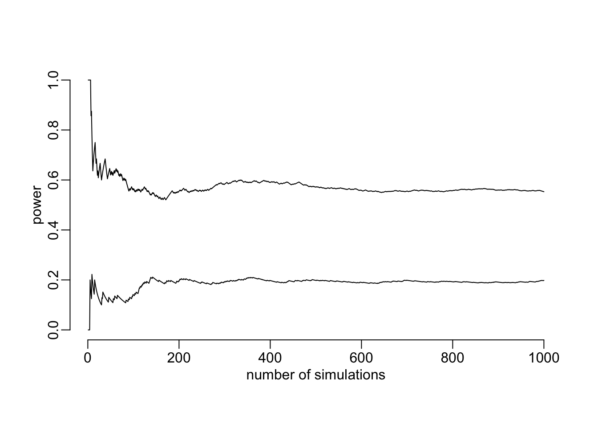
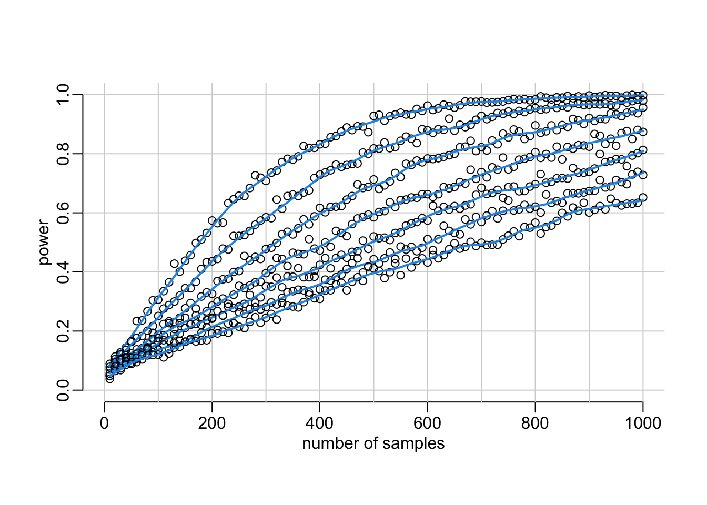

needed_packages <- c(
"dplyr",
"bbmle",
"purrr",
"magrittr",
"tidyr",
"parallel",
"whoami"
)IGRA+ decay sample size calculation
All the data and source code files are here.
You can ask report errors or for additional analysis here.
1 Packages
Needed packages:
Installing the missing packages:
to_install <- needed_packages[! needed_packages %in% installed.packages()[,"Package"]]
if (length(to_install)) install.packages(to_install)Loading packages:
library(dplyr)
library(bbmle)
library(purrr)
library(magrittr)
library(parallel)2 Utility functions
Tuning abline():
abline2 <- function(...) abline(..., col = "lightgrey")The logit function:
logit <- function(x) log(x / (1 - x))The logistic function:
logistic <- function(x) 1 / (1 + exp(- x))Random draws following the Bernoulli law:
rbern <- function(p) rbinom(length(p), 1, p)A tuning of the runif() function:
runif2 <- function(max_t_before) runif(length(max_t_before), 0, max_t_before)Below is a function that adds to a dataframe colones of proportion estimates together with borders of a confidence interval from a column x of successes and a column n of trials. This is a wrapper around the prop.test() function.
add_prop_est <- function(df, x, n, p = "est", l = "lwr", u = "upr", ...) {
df |>
mutate(test = map2({{ x }}, {{ n }}, prop.test, ...),
"{p}" := map_dbl(test, ~ .x[["estimate"]]),
conf = map(test, ~ setNames(.x[["conf.int"]], c(l, u)))) |>
tidyr::unnest_wider(conf) |>
select(- test)
}3 A simulator
A function that simulates data according to an exponential decay:
simulator <- function(p0, p1, t, t_entry, t_exposure = 0) {
tibble(time = t_entry,
igra = rbern(p0 * exp(log(p1 / p0) * (t_entry + t_exposure) / t)))
}Where p0 is the assumed initial proportion of IGRA+, p1 is the assumed proportion of IGRA+ t years later initial time, t_entry is a vector of sampling times (i.e. dates of entry in the country) and t_exposure is a vector of the time before entry at which exposure happened. Note that:
- both
t_entryandt_exposureare vectors of random values - the number of samples corresponds to the length of
t_entry - the length of
t_exposureis either equal to 1 or the number of samples
An example with 500 samples showing what the simulations look like:
simulator(.3, .1, 10, runif(500, max = 10))# A tibble: 500 × 2
time igra
<dbl> <int>
1 2.20 0
2 4.39 1
3 6.78 1
4 0.146 0
5 2.24 0
6 8.66 0
7 6.11 0
8 1.34 1
9 8.30 0
10 9.78 0
# ℹ 490 more rowsTo explore a bit the simulations, let’s create a function that ease the vizualization of the Bernoulli trials data:
show_simulations <- function(simulations, xlim = c(0, 10), breaks = 0:10) {
simdata <- simulations |>
mutate(time2 = cut(time, breaks)) |>
group_by(time2) |>
summarise(x = sum(igra), n = length(igra)) |>
add_prop_est(x, n) |>
mutate_at(c("est", "lwr", "upr"), multiply_by, 100) |>
mutate(time = as.integer(time2) - .5)
plot(NA, xlim = xlim, ylim = c(0, max(simdata$upr)),
xlab = "time since entry (years)", ylab = "% IGRA+")
abline2(h = 10 * 0:10); abline2(v = 0:max(xlim))
with(simdata, {
points(time, est)
arrows(time, lwr, time, upr, .1, 90, 3)
})
}And let’s build the following wrapper around this function:
explore_simulations <- function(p0 = .3, p1 = .1, t = 10, n = 1000,
xlim = c(0, 10), breaks = 0:10) {
show_simulations(simulator(p0, p1, t, runif(n, max = t)), xlim, breaks)
xs <- seq(0, t, le = 500)
lines(xs, 100 * p0 * exp(xs * log(p1 / p0) / t))
}Let’s play with it:
explore_simulations(p0 = .3, p1 = .1, t = 10, n = 10000)
4 Exponential decay model
4.1 ML estimation
Let’s write down the minus log-likelihood of the exponential decay model:
mLL <- function(logita, logmlambda, time, igra) {
p <- logistic(logita) * exp(- exp(logmlambda) * time)
igra <- as.logical(igra)
- sum(log(c(p[igra], (1 - p)[! igra])))
}Where logitsa is the logit value of the initial proportion of IGRA+, logmlambda is the log of minus the rate of decay and time and igra are the columns of the simulation dataframe. Let’s generate some simulations:
simulations <- simulator(.3, .1, 10, runif(500, max = 10))And let’s use these simulated data to compute the likelihood of the exponential decay model:
mLL(logit(.3), log(- log(.1 / .3) / 10), simulations$time, simulations$igra)[1] 225.91514.2 Power calculation
A function that computes the ability, on simulations data set, to reject H0 according to which the decay rate is equal to 0, with the type-I risk alpha:
decay_rate_test <- function(simulations, p0, p1, t, alpha = .05) {
mle3 <- function(...) mle2(mLL, data = simulations, ...)
model0 <- mle3(start = list(logita = logit(p0)), fixed = list(logmlambda = - Inf))
model1 <- mle3(start = list(logita = logit(p0), logmlambda = log(log(p0 / p1) / t)))
anova(model0, model1)[2, 5] < alpha
}Let’s try it:
decay_rate_test(simulations, .3, .1, 10)[1] TRUEA wrapper around the combination of simulator() and decay_rate_test(), allowing to repeat the operation N times:
decay_rate_power <- function(p0, p1, t, t_entry,
t_exposure = function() 0, alpha = .05, N = 100) {
replicate(N, decay_rate_test(simulator(p0, p1, t, t_entry(), t_exposure()),
p0, p1, t, alpha))
}Note that this time t_entry and t_exposure have to be functions that generate random times at the time the simulator is executed. Let’s try it:
out <- map(c(function() 0,
function(x) runif(200, max = 30)),
~ decay_rate_power(p0 = .3, p1 = .1, t = 10,
t_entry = function() runif(200, max = 10),
t_exposure = .x, N = 1000))And see whether the number of simulations (1000) looks about OK (i.e. whether the power has converged):
plot(cummean(out[[1]]),
type = "l", xlab = "number of simulations", ylab = "power", ylim = 0:1)
lines(cummean(out[[2]]))
Looks about OK. Next step is the compute the power for various samples sizes (takes about 40’ on an 11-core):
samples_sizes <- seq(10, 1000, 10)
powers <- seq(0, 30, 5) |>
map(~ mclapply(
samples_sizes,
function(x) decay_rate_power(p0 = .3, p1 = .1, t = 10, N = 1000,
t_entry = function() runif(x, max = 10),
t_exposure = function() runif(x, max = .x)),
mc.cores = detectCores() - 1))Let’s visualize it:
plot(NA, xlim = c(0, 1000), ylim = 0:1, xlab = "number of samples", ylab = "power")
abline2(v = seq(0, 1000, 100)); abline2(h = seq(0, 1, .2))
walk(powers,
function(x) {
mean_powers <- map_dbl(x, mean)
points(samples_sizes, mean_powers)
with(lowess(samples_sizes, mean_powers, .1), lines(x, y, col = 4, lwd = 2))})
Looking for the number of samples that gives 80% power:
power2n <- function(power,
data = lowess(samples_sizes, map_dbl(powers[[1]], mean), .1), ...) {
optimize(function(xout) with(data, abs(approx(x, y, xout, ...)$y - power)),
c(0, 1000))$minimum
}The number of the samples needed to get a power of 80% in case there is no delay between exposure and country entry:
power2n(.8)[1] 365.654